Simulation, spaceflight hardware, robotics, computational materials, and observational astronomy. Several are still open, and I'll keep adding as they ship.
An Unreal Engine 5 application that simulates the Artemis II mission in real time: trajectory visualization, stage separation tracking, antenna link scheduling, and live motion telemetry. Built with Team Luna Vista for the NASA App Development Challenge, which we won nationally.
Mission status: approaching the Moon. Live telemetry, prioritized antenna link budget, and trajectory overlay.
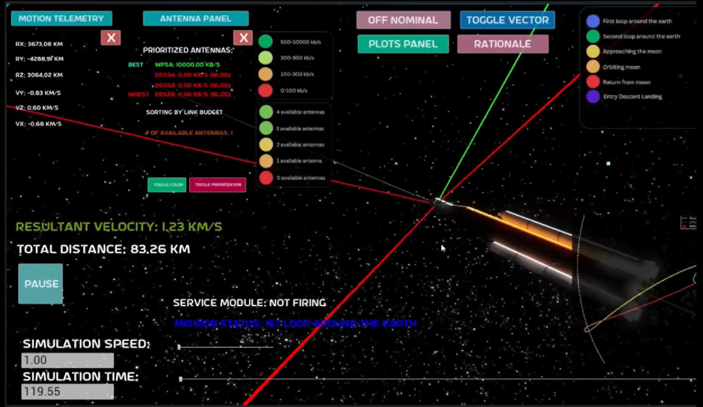
Coasting at 1.23 km/s. WPSA is the only antenna still holding a link.
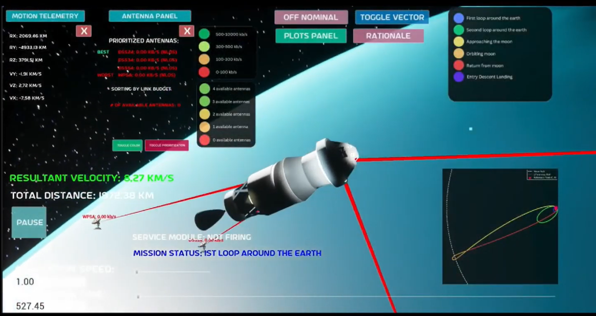
First Earth loop, 8.27 km/s. Zero antennas in view, the case that actually matters.
CONTRIBUTION
01Owned physics and data across a seven-person team: modeled the mission path and translated real flight parameters into the simulation.
02Built the motion telemetry readouts so position, velocity, and mission phase track the vehicle continuously.
03Modeled the SLS and Orion stack in Onshape for the simulation's vehicle geometry.
04Survived a NASA interview round, then rebuilt lighting, antenna visibility, and UI density on their feedback.
05Won a fully-funded trip to Johnson Space Center: facility tour, a presentation to NASA executives, and a national broadcast segment.
Invited to speak at the HELIX Discovery Showcase for the opening of Rutgers' HELIX research building, the youngest speaker among established research pioneers.
0024TH OF 50+ TEAMS · MIT BWSI
Wildfire-Detection CubeSat
A 1U CubeSat that images land on a fixed cadence and only stores frames containing a positive wildfire detection, using a classifier trained on NASA GOES data. Built as team Satellites in a Cube for the MIT Beaver Works Build-A-CubeSat Challenge, placing 4th of 50+ teams nationally.
1U structure with solar panel and flight computer ports
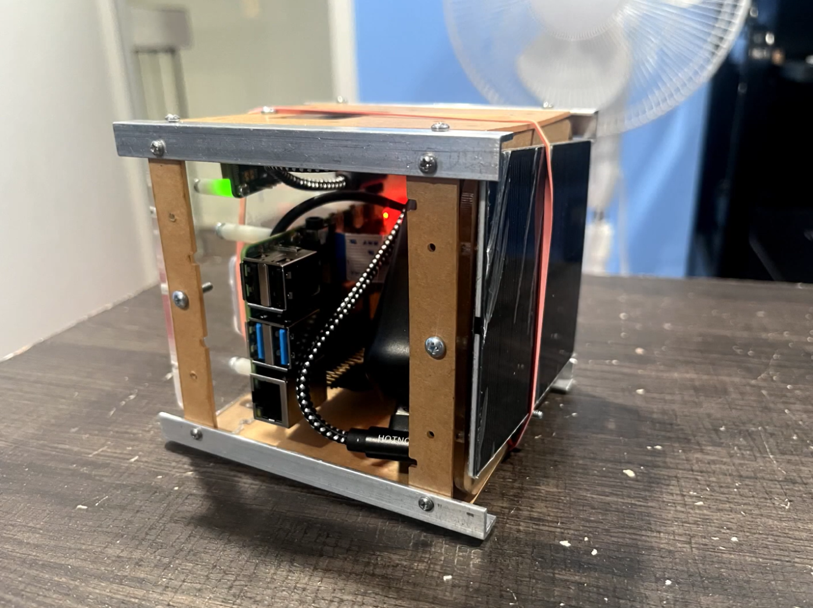
The built 1U, powered up: rails, solar panel, Pi port cluster
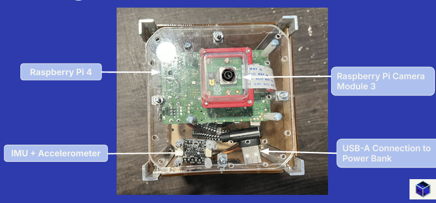
Inside the 1U: Pi 4, Camera Module 3, IMU and accelerometer, USB-A power
CONTRIBUTION
01Owned the demonstration plan and mission goals: defined what we had to prove on the bench and how we would measure it.
02Worked the wildfire-detection model trained on NASA GOES data, targeting 90% detection accuracy.
03Contributed to the 1U structure and the internal mounting for the flight computer, camera, and power stack.
04Wrote requirements against real subsystems: structures, ADCS, imaging, power, propulsion, and thermal.
ROLEDemonstration plan & goals
FORM FACTOR1U, 10 cm cube, under 1 kg
AVIONICSRaspberry Pi 4, Camera Module 3, IMU
POWERSolar panels into lithium-ion backup
TARGET ORBIT600 km LEO, 1 year, Δv under 10 m/s
WHY IT MATTERS
Gives agencies like FEMA an orbital detection layer above drone-based survey.
A five-axis arm built on the SO-101 platform and programmed to pick up test tubes in a lab. The interesting part of the problem is not the reach, it's the grip: glass tubes are fragile, nearly featureless, and tightly racked, so the arm has to locate and lift one without disturbing its neighbours. Designed in CAD, 3D printed, then wired and tuned on the bench.
Sim-to-Sample, full assembly
CONTRIBUTION
01Programmed the SO-101 arm to locate and lift test tubes reliably in a lab setting.
02Tuned the pick sequence so the grip holds glass without crushing it or knocking adjacent tubes.
Surface modeling practice on airframes I wanted to understand from the inside out: Concorde's ogival delta, the 737's wing and nacelle geometry, the B-2's blended flying wing. Each one is a study in a different problem: supersonic area ruling, transonic cruise efficiency, low-observable curvature.
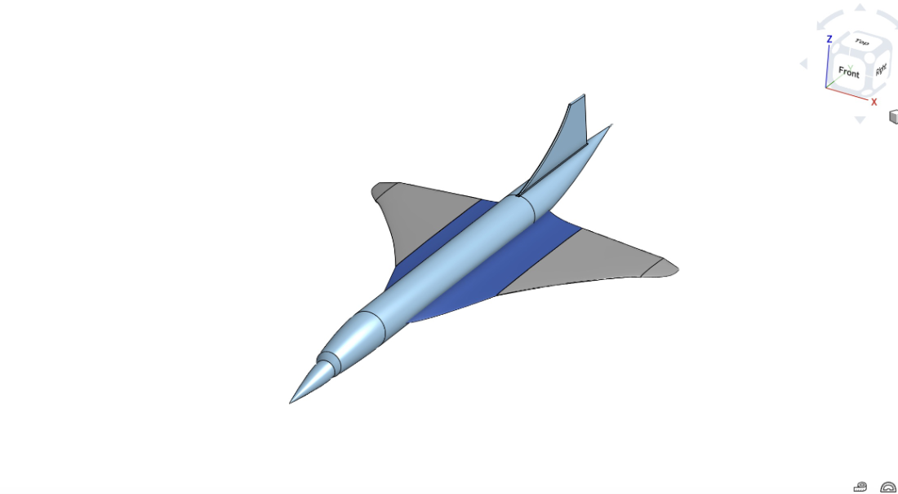
Concorde, ogival delta
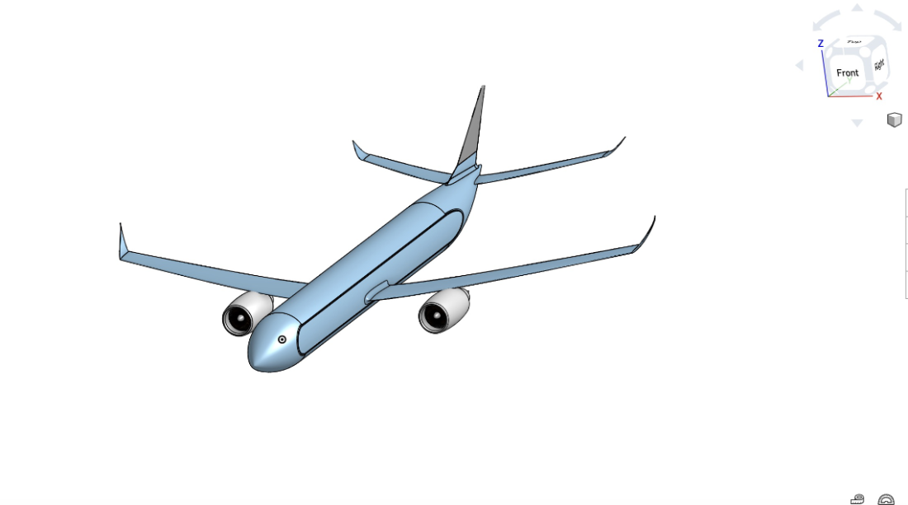
737, transonic wing and nacelles
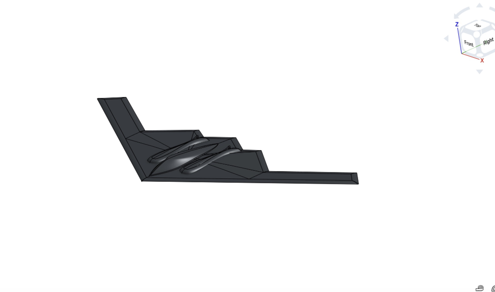
B-2 Spirit, blended flying wing
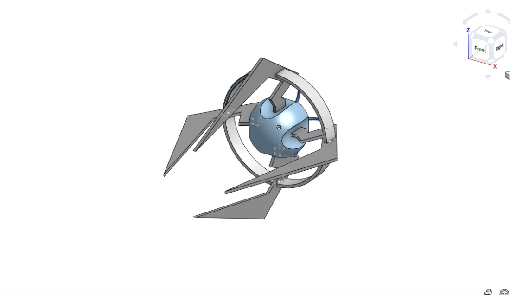
TIE fighter, circular patterning
WHY
Modeling an aircraft forces you to confront decisions the real designers made. You cannot fake a wing root fillet or a nacelle intersection, so every one of these taught me something about loft continuity, patterning, and where a surface model stops being geometry and starts being engineering. It's also what made me fast enough in Onshape to model the SLS stack for the Artemis simulation.
005DOE-FUNDED · 3RD AT MCLAREN SYMPOSIUM
Classifying Minimum-Energy Grain Boundaries
Ongoing research in the microMechanics of Deformation Group at Rutgers Materials Science, with Prof. Ryan Sills. Grain boundaries govern how a metal fails, and the Hall-Petch relationship that predicts strength from grain size breaks down below roughly 30 nanometers. The goal is a framework that classifies boundaries by defect content, so behavior can be predicted from structure.
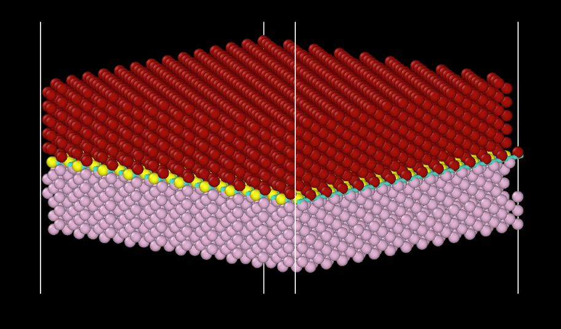
The bicrystal: two orientations meeting, defect atoms picked out in yellow and teal
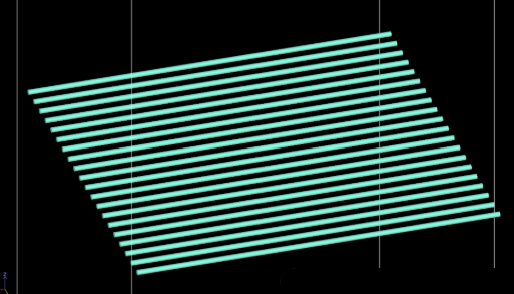
The extracted line defects, oblique view
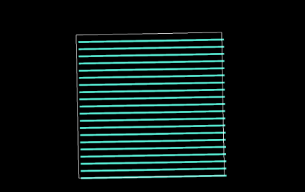
Face-on: the spacing is what sets the boundary class
WHAT I DID
01Worked a dataset of 7,304 minimum-energy aluminum grain boundaries spanning all five macroscopic degrees of freedom, drawn from over 43 million candidate structures.
02Used Interfacial Line Defect Analysis in OVITO to extract defect content from each boundary and group boundaries into classes.
03Categorized boundaries by energy, misorientation angle, and grain size so machine learning models can predict the response to applied stress.
04Presented at the Rutgers Malcolm G. McLaren Symposium, taking 3rd place and a $300 scholarship.
The motivation is medical: implants and prosthetics fail at grain boundaries, and mean-lifetime statistics hide the anomalies that actually break them.
006NASA SEES · ~5% ACCEPTANCE
Refining the Age and Distance to NGC 2194
Selected for NASA's SEES research internship, then ran a photometric study of the open cluster NGC 2194. Our catalog of 816 stars expands substantially on the 120 examined in Cuffey's 1942 study. First author on the resulting poster, presented at MIT URTC and at AGU Fall Meeting, the largest earth and space science conference in the world.
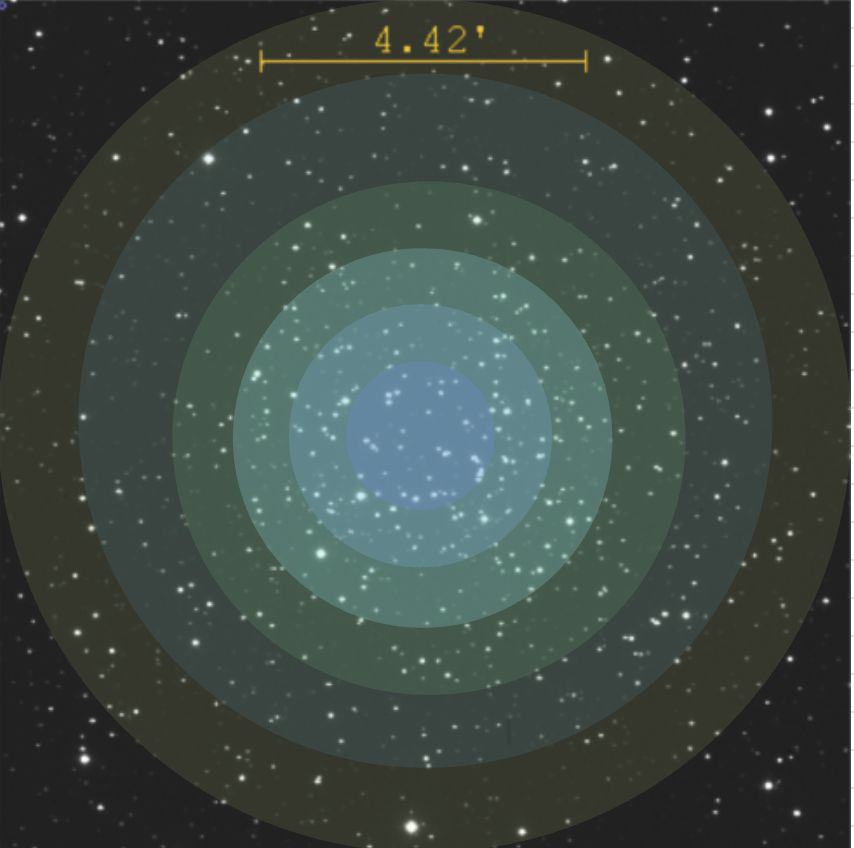
The ring system I built to split the field
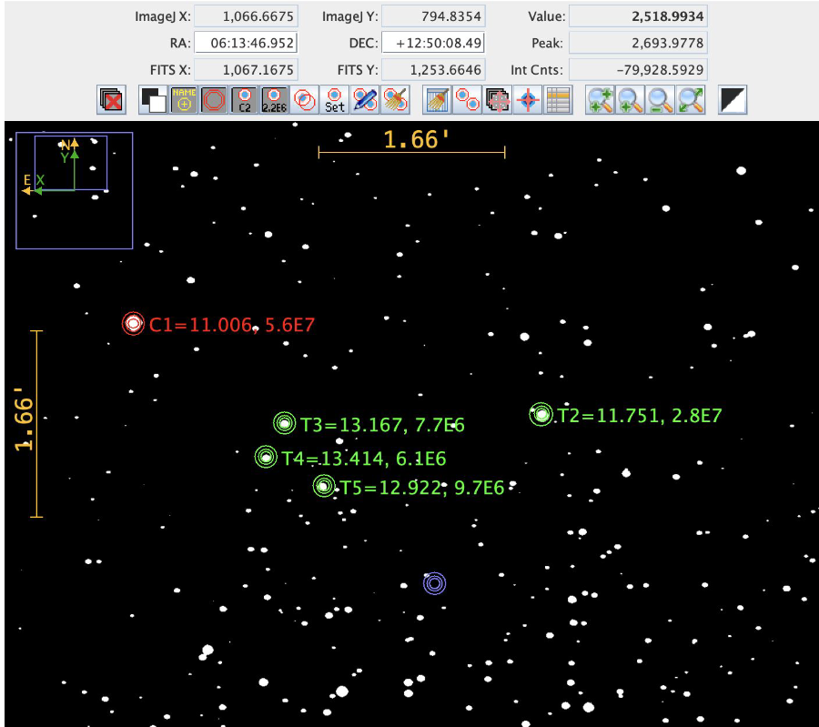
Aperture photometry in AstroImageJ
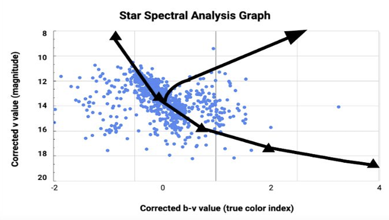
The colour magnitude diagram, 500+ stars plotted. The turnoff where the main sequence bends is what dates the cluster.
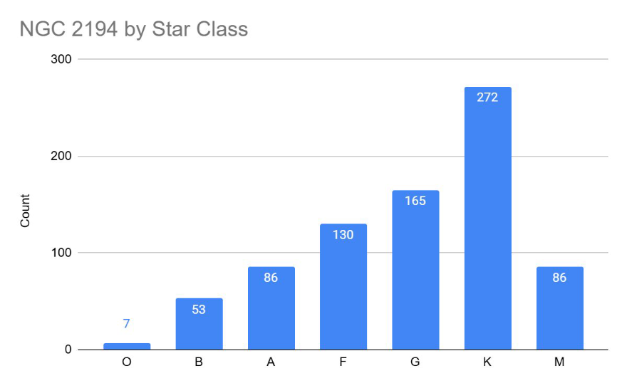
Spectral class distribution across the catalog: K-type dominates at 272 stars, with only 7 O-type
WHAT I DID
01Built a ring-based star numbering system so a six-person team could catalog the cluster without collisions, inner rings numbered first.
02Performed B and V broadband photometry in AstroImageJ, converting photon counts inside an aperture into apparent magnitudes against known reference stars.
03Built the Hertzsprung-Russell diagram, located the main-sequence turnoff near B- to A-type stars, and read off a maximum age of 400 million years.
04Applied reddening corrections and the distance modulus to derive a refined distance of roughly 1,076 parsecs, about 3,510 light-years.
PROGRAMNASA SEES (STEM Enhancement in Earth Science)
Co-founded the team and led mechanical design: chassis, manipulator arm, and the full sensor package feeding a TensorFlow object-detection pipeline. Earned the team's first Innovate Award and a state qualifier spot in New Jersey's top 20.
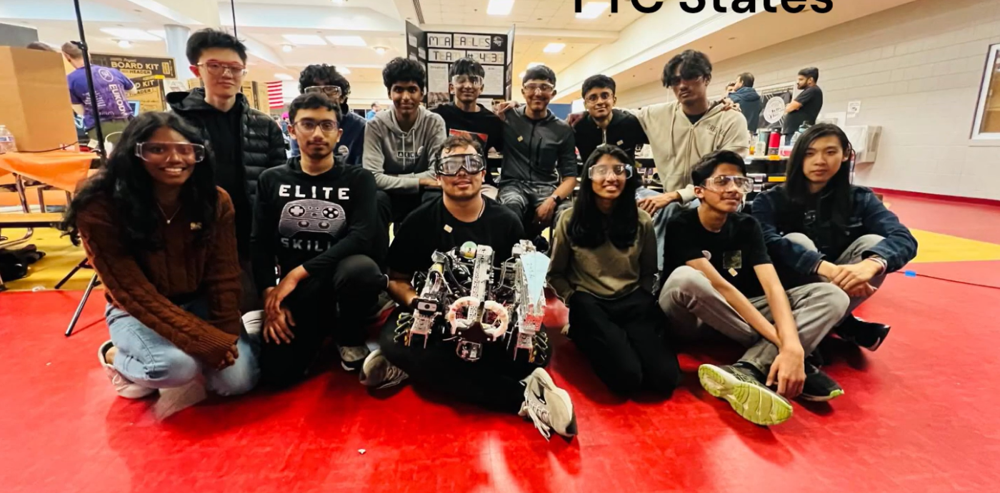
The team and the robot at the New Jersey state championship
CONTRIBUTION
01Designed and built the chassis and the arm mechanism.
02Specified and installed every sensor on the robot, including the vision system for TensorFlow object detection.
03Co-founded the team as Mechanical Lead, Oct 2023 to present.
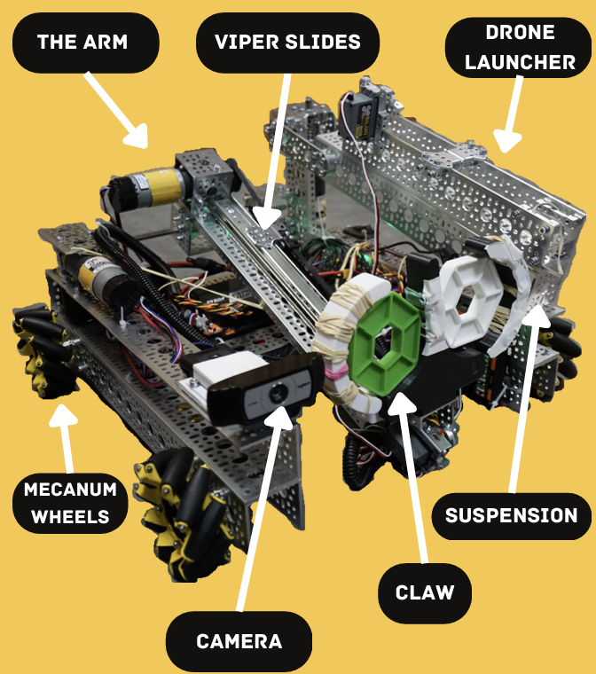
The subsystems, called out
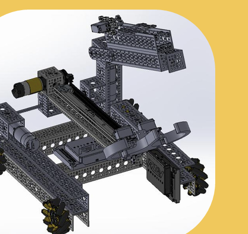
The chassis and arm in CAD
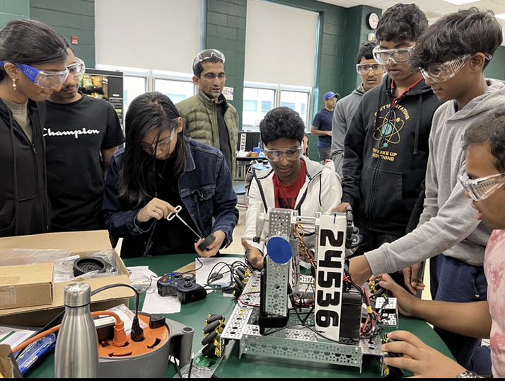
Pit work between matches
008ONGOING · 4+ YEARS
Ashtronomy
A site documenting four-plus years of astrophotography: around 100 images of deep-sky objects, planets, and sky events, plus the low-budget methods behind each one so anyone can reproduce them. Over 200 hours under the stars, shot on everything from an Orion StarBlast 4.5 to the observatory's 26-inch Newtonian.
A quadcopter built from the frame up for aerial video. The airframe, motors, and power distribution are assembled, but I stopped short of a finished flight package and it isn't currently active. Included because the build taught me more about power budgeting and vibration than anything else I've made.
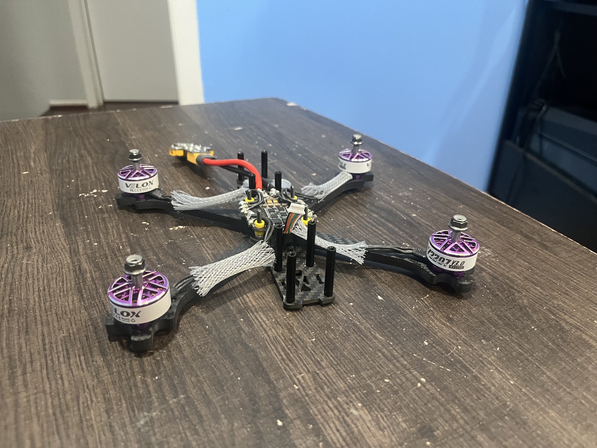
Assembled airframe, unfinished build
STARTING NOW
Three teams at Carnegie Mellon
Just joined all three as a new member. No contributions to claim yet, but this is where the next few years of hardware work happens.
Carnegie Mellon Racing
CMU Lunabotics
Roboclub
Follow along on LinkedIn, where I post work as it happens.